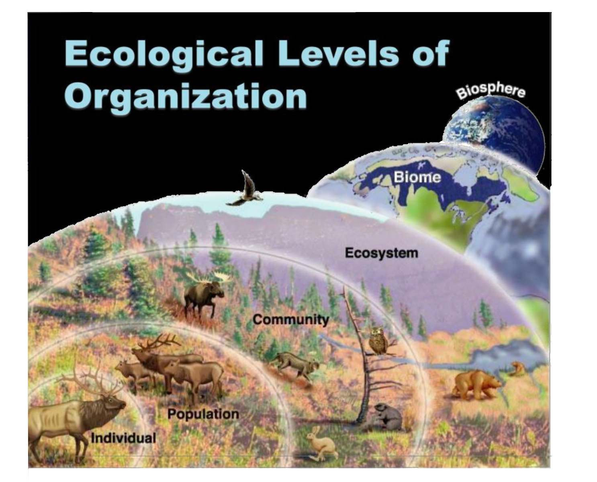
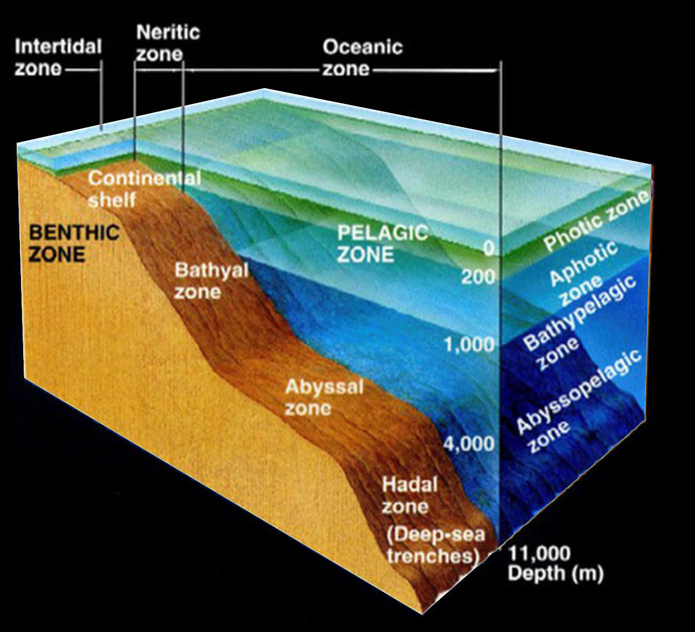

Ecology
Ecology is the scientific study of how living organisms interact with each other and with their physical environment.
Levels of Ecological Organization
- Species – A group of organisms that can interbreed and produce fertile offspring.
- Population – All individuals of a species living in a specific area.
- Community – All the different populations that live together in an area.
- Ecosystem – A community of organisms and their non-living environment.
- Biome – A group of ecosystems with similar climates and organisms.
- Biosphere – The global sum of all ecosystems; the zone of life on Earth.

Variations in Biomes
Biomes vary due to temperature, precipitation, latitude, and altitude. These factors influence the types of vegetation and animal life found in each biome.
| Biome Type |
Climate |
Vegetation |
Animal Life |
| Tropical Rainforest |
Hot, humid, high rainfall |
Dense trees, vines |
Monkeys, parrots, jaguars |
| Desert |
Hot/cold, very dry |
Cacti, shrubs |
Snakes, lizards, insects |
| Grassland |
Moderate rain, dry season |
Grasses, few trees |
Bison, lions, zebras |
| Temperate Forest |
Mild, 4 seasons |
Deciduous trees |
Deer, bears, birds |
| Tundra |
Cold, dry, permafrost |
Mosses, lichens |
Arctic foxes, polar bears |
| Taiga (Boreal) |
Cold, more rain than tundra |
Coniferous trees |
Moose, wolves, owls |
Microclimate
A microclimate is a small area with climate conditions that differ from the surrounding region. Examples include:
- A shaded forest floor that is cooler and moister than open land.
- Urban areas where buildings create heat islands.
Zonation in Marine Sea Floor
- Intertidal Zone – Where land meets sea; organisms adapted to tides.
- Neritic Zone – Shallow ocean above continental shelf; rich in life.
- Bathyal Zone – Deeper water, low light; fewer organisms.
- Abyssal Zone – Very deep, cold, dark; specialized organisms.
- Hadal Zone – Deepest trenches; extreme pressure and cold.

Interactions: Living and Non-Living
Living (Biotic) Components:
- Plants, animals, bacteria, fungi
Non-Living (Abiotic) Components:
- Sunlight, air, water, soil, temperature
Living-Living Interactions:
- Predation
- Symbiotic relationships
Living - Non-Living Interactions:
- Plants (biotic) absorb sunlight (abiotic) for photosynthesis.
- Soil nutrients (abiotic) support plant growth (biotic).
Non-Living - Non-Living Interactions:
- Soil erosion
- Rock weathering
Written by Kasiban Parthipan